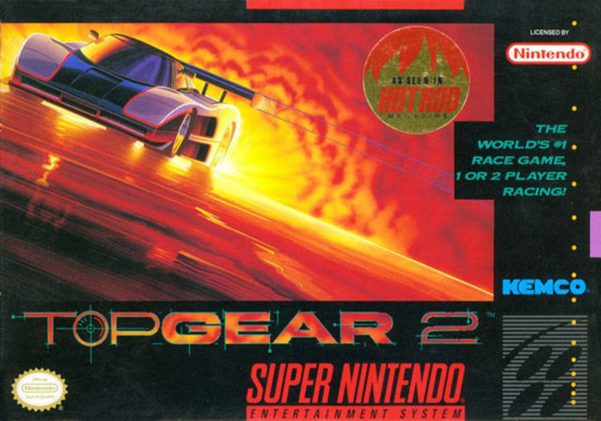

I guess I'll talk about one of my old pasttimes - it's not something that I currently do, but for a time, it was one the only things I did for fun.
Top Gear 2, released in 1993, is a 1-2 player racing video game made for the Super Nintendo Entertainment System where the player would traverse through 16 countries and race on various tracks within that country, collecting money earned from placing high in said races, and upgrading your car to make it go faster as you progress through the game.
I've been playing this game for as long as I can remember. Even now, the feel of the car, the sounds and music that played as you drove lap after lap...
It's nostalgic. At least, I think so.
Skipping to winter break of my sophomore year of college, I threw around the idea of trying to play this game as fast as I could. I had seen someone on YouTube play the last country of the game to reach the credit roll in about 10 and a half minutes (the record at the time), and my immediate thought was that it looked easy enough.
So, like any other person with too much time on their hands, I booted up my console, some software to capture video input from the console, and brought the time down to 10:17.
At the time, it seemed like an afterthought - I didn't expect anyone to take it seriously. I just really liked the game, and I thought that I could maybe have a bit of fun with it. I posted the time on a website dedicated to people trying to beat video games as fast as they could - an activity called "speedrunning" - and found myself with a record that beat the other 3 people that posted times for it.
I didn't expect the time to be so quickly beaten. I posted my first video on December 28th, 2016, and I think within a day, my video was obsolete, thanks to a user known as Technickle. At first, I was shocked - I didn't expect someone else to show such passion for a game that was so old and obscure. Over the next year and a half, I spent my time trying to push this game to its limits, trading records and whittling the time down second by second with other people that were playing it. I eventually came to find out that the Top Gear games were actually extremely popular in Brazil; In Brazil, the video game market is extremely overpriced, due to high taxes on something they consider as non-essential. As such, a large market exists for piracy, and older consoles that would otherwise be seen as obsolete everywhere else in the world are still thriving in Brazil.
I don't play the game anymore - I've since stopped playing it out of boredom. I still occasionally talk to members in the community to catch up, but I found that by playing it so much, I lost the original nostalgia I once had for it. The act of going back and forth with times, discussing strategies, and showcasing the game during various events was fun for a time, but I've since stopped to keep the game fresh for if/when I come back to it.
As of September 7th, 2019, the current records for the specific category I played the game under stands as follows:
| Rank | Name | Real Time |
|---|---|---|
| 1st | Technickle | 9m 11s 149ms |
| 2nd | [me] | 9m 16s 470ms |
| 3rd | leandrom90 | 9m 25s 360ms |
| 4th | DunkelGotik | 9m 35s 390ms |
| 5th | Icenine | 10m 11s 220ms |
| 6th | rewstarr | 10m 12s |
| 7th | IvanHallockSR | 12m 02s 510ms |
I don't care much for the record anymore. I'm just surprised that a community (a small one, but a community nevertheless) came from doing something on a whim. I couldn't have predicted it, considering the game's current age (26 years as of the writing of this document).
It's just... such a weird legacy to leave behind.